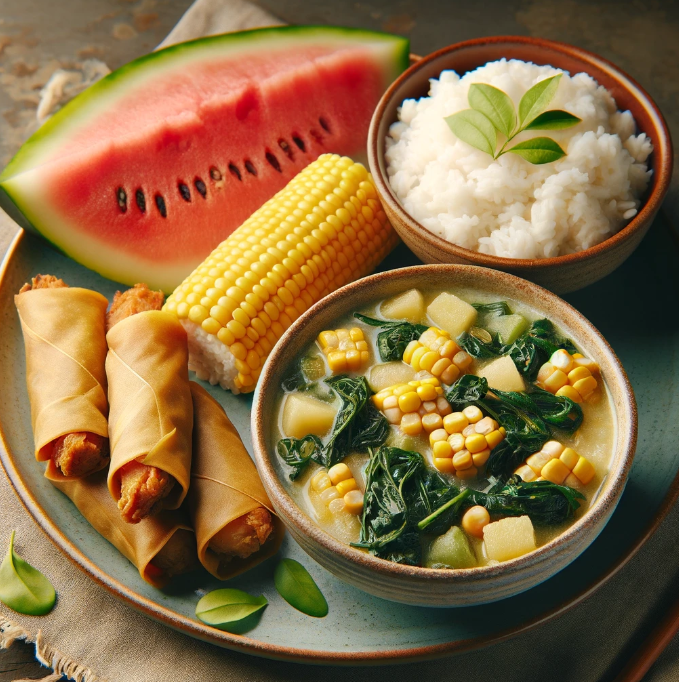

Pansit Bihon gisado
Ingredients
- 150 grams bihon
Protein:
- 100 grams pork belly, thinly sliced (or chicken breast, tofu, or shrimp)
- 1/2 cup chopped shrimp (optional)
Vegetables:
- 1 onion, chopped
- 2 cloves garlic, minced
- 1 carrot, julienned
- 1 cup mung bean sprouts
- 1/2 cup chopped green cabbage
Nutrient:
| Nutrient |
Amount |
| Calories |
350 kcal |
| Protein |
20 g |
Meal Procedure
- Soak the bihon in warm water for 10-15 minutes, or until softened. Drain well and set aside.
- Marinate the meat (optional): If using pork, marinate it in soy sauce, pepper, and a little oil for 15 minutes (optional).
- In a pan or wok, heat the cooking oil over medium heat.
- Add the onion and garlic, and sauté until fragrant, about 30 seconds.
- Add the pork (or other protein) and cook until browned, about 2-3 minutes. If using shrimp, add them later in the process to prevent overcooking.
- Add the carrots and cook for another minute.
- Add the drained bihon, soy sauce, fish sauce (if using), and black pepper. Stir-fry for 2-3 minutes, or until the noodles are heated through.
- Add a little water if the pan gets too dry and the noodles are not cooked through.
- Season with salt to taste, and stir in the mung bean sprouts and green cabbage. Cook for another minute, or until the vegetables are slightly wilted.